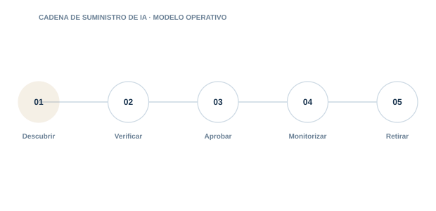

11 · PILAR
Cadena de suministro de IA
Conocer y controlar componentes, modelos, datasets y proveedores.

Directorio del pilar5 guías · acceso directo
11.0111.0211.0311.0411.05
Model SBOM y AI-BOM
Crea un inventario verificable de todos los componentes de un sistema de IA.
Procedencia de modelos
Verifica origen. versiones. licencias. firmas y cambios del modelo.
Procedencia de datasets
Documenta fuentes. permisos. calidad. transformaciones y restricciones de uso.
Riesgo de terceros
Evalúa proveedores de modelos. APIs. datos. tools y plataformas.
Cadena de suministro MCP
Controla servidores. paquetes. manifests y actualizaciones de herramientas MCP.
01
DescubrirControl y evidencia aplicable
02
VerificarControl y evidencia aplicable
03
AprobarControl y evidencia aplicable
04
MonitorizarControl y evidencia aplicable
05
RetirarControl y evidencia aplicable
Cada guía incluye explicación, implantación, controles, evidencias, errores habituales, métricas y referencias.